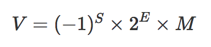

# js 精度丢失问题
# 前言
众所周知，JavaScript 浮点数运算时经常遇到会0.000000001和0.999999999这样奇怪的结果，如0.1+0.2=0.30000000000000004、1-0.9=0.09999999999999998，出现这种问题到底是为什么？
# 内容
# 一、JavaScript 是如何表示数字的？
JavaScript 使用 Number 类型表示数字（整数和浮点数），遵循IEEE 754标准通过 64 位来表示一个数字，也就是标准的 double 双精度浮点数（相关的还有 float 32 位单精度）。
这样的存储结构优点是可以归一化处理整数和小数，节省存储空间。
64 位比特双可以三个部分：
- 符号位 S：第 1 位是正负数符号位(sign)，0 代表正数，1 代表负数
- 指数位 E：中间的 11 位存储指数(exponent),用来表示次方数
- 尾数位 M：最后的 52 位是尾数(mantissa)，储存小数部分，超出的部分自动进一舍零

实际数字就可以用以下公式来计算：

对于 64 位的双精度浮点数，最高的 1 位是符号位 S，接着的 11 位是指数 E，剩下的 52 位为有效数字 M。
| 位数 | 阶数 | 有效数字/尾数 |
|---|---|---|
| 单精度浮点数 | 32 | 8 |
| 双精度浮点数 | 64 | 11 |
# 二、运算时发生了什么？
计算机无法直接对十进制的数字进行运算，这是硬件物理特性已经决定的。这样去运算分成了两个部分：先按照 IEEE754 转成相应的二进制，然后对阶运算
# 2.1 浮点数转换为二进制
浮点数转换成二进制，我们要将整数部分和小数部分分开，整数部分采用除 2 取余，小数部分采用乘 2 取整。
例如：13.125 转换为二进制：
整数部分
13
÷ 2
-------------- ↑
6 1 |
÷ 2 |
-------------- |
3 0 |
÷ 2 |
-------------- |
1 1 |
÷ 2 |
-------------- |
0 1 ----
2
3
4
5
6
7
8
9
10
11
12
13
14
逆序将余数拼上得到 13 的二进制：1101
小数部分
0.125
x 2 ----
----------------- |
0.25 0 |
x 2 |
----------------- |
0.5 0 |
x 2 |
----------------- |
1.0 1 ↓
2
3
4
5
6
7
8
9
10
11
得到小数部分的二进制：0.001
两部分相加，得到 13.125 的二进制：1101.001
二进制 1101.001可以写成 1.101001 * 2^3，即这里 M 为 1.101001,E 为 3,s 为 0
# 2.2 0.1 的二进制
0.1
x 2
-------
0.2 0
x 2
-------
0.4 0
x 2
-------
0.8 0
x 2
-------
0.6 1
x 2
-------
0.2 1
------- 又从0.2开始循环了
2
3
4
5
6
7
8
9
10
11
12
13
14
15
16
17
18
于是，我们得到了 0.1 的二进制表示，即为0.0001100110011(0011循环)，即1.100110011(0011)*2^-4，即，M 1.100110011(0011),E -4,那么，s=0,e=-4+1023=1019,那么，js 中由于是双精度的，那么 0.1 的表示为
0 01111111011 1001100110011001100110011001100110011001100110011001
--------------------------------------------------------------------
s exp(11位) frac(52位)
2
3
4
# 2.3 0.2 的二进制
0.2
x 2
-------
0.4 0
x 2
-------
0.8 0
x 2
-------
0.6 1
x 2
-------
0.2 1
------- 又从0.2开始循环了
2
3
4
5
6
7
8
9
10
11
12
13
14
15
0.2 的二进制表示：0.001100110011(0011 循环)，即 1.100110011(0011)*2^-3 那么，js 双精度 0.2 的表示：
0 01111111100 1001100110011001100110011001100110011001100110011001
2
# 2.4 0.1+0.2 的二进制
浮点数的加减运算一般由以下五个步骤完成：
- 对阶
- 尾数运算
- 结果处理
- 舍入处理
- 溢出判断
对阶
将两个进行运算的浮点数的阶码对齐的操作。对阶的目的是为使两个浮点数的尾数能够进行加减运算。因为，当进行 Mx·2Ex 与 My·2Ey 加减运算时，只有使两浮点数的指数值部分相同，才能将相同的指数值作为公因数提出来，然后进行尾数的加减运算。 对阶的具体方法是：首先求出两浮点数阶码的差，即 ⊿E ＝ Ex-Ey，将小阶码加上 ⊿E，使之与大阶码相等，同时将小阶码对应的浮点数的尾数右移相应位数，以保证该浮点数的值不变。几点注意：
- 对阶的原则是小阶对大阶，之所以这样做是因为若大阶对小阶，则尾数的数值部分的高位需移出，而小阶对大阶移出的是尾数的数值部分的低位，这样损失的精度更小。
- 若 ⊿E ＝ 0，说明两浮点数的阶码已经相同，无需再做对阶操作了。
- 采用补码表示的尾数右移时，符号位保持不变。
- 由于尾数右移时是将最低位移出，会损失一定的精度，为减少误差，可先保留若干移出的位，供以后舍入处理用。
尾数运算
尾数运算就是进行完成对阶后的尾数相加减。这里采用的就是我们前面讲过的纯小数的定点数加减运算。
结果规格化
在机器中，为保证浮点数表示的唯一性，浮点数在机器中都是以规格化形式存储的。对于 IEEE754 标准的浮点数来说，就是尾数必须是 1.M 的形式。由于在进行上述两个定点小数的尾数相加减运算后，尾数有可能是非规格化形式，为此必须进行规格化操作。 规格化操作包括左规和右规两种情况。 左规操作：将尾数左移，同时阶码减值，直至尾数成为 1.M 的形式。例如，浮点数 0.0011·25 是非规格化的形式，需进行左规操作，将其尾数左移 3 位，同时阶码减 3，就变成 1.1100·22 规格化形式了。 右规操作：将尾数右移 1 位，同时阶码增 1，便成为规格化的形式了。要注意的是，右规操作只需将尾数右移一位即可，这种情况出现在尾数的最高位（小数点前一位）运算时出现了进位，使尾数成为 10.xxxx 或 11.xxxx 的形式。例如，10.0011·25 右规一位后便成为 1.00011·26 的规格化形式了。
舍入处理
浮点运算在对阶或右规时，尾数需要右移，被右移出去的位会被丢掉，从而造成运算结果精度的损失。为了减少这种精度损失，可以将一定位数的移出位先保留起来，称为保护位，在规格化后用于舍入处理。 IEEE754 标准列出了四种可选的舍入处理方法：
- 就近舍入（round to nearest） 这是标准列出的默认舍入方式，其含义相当于我们日常所说的“四舍五入”。例如，对于 32 位单精度浮点数来说，若超出可保存的 23 位的多余位大于等于 100…01，则多余位的值超过了最低可表示位值的一半，这种情况下，舍入的方法是在尾数的最低有效位上加 1；若多余位小于等于 011…11，则直接舍去；若多余位为 100…00，此时再判断尾数的最低有效位的值，若为 0 则直接舍去，若为 1 则再加 1。
- 朝+∞ 舍入（round toward +∞） 对正数来说，只要多余位不为全 0，则向尾数最低有效位进 1；对负数来说，则是简单地舍去。
- 朝-∞ 舍入（round toward -∞） 与朝+∞ 舍入方法正好相反，对正数来说，只是简单地舍去；对负数来说，只要多余位不为全 0，则向尾数最低有效位进 1。
- 朝 0 舍入（round toward 0） 即简单地截断舍去，而不管多余位是什么值。这种方法实现简单，但容易形成累积误差，且舍入处理后的值总是向下偏差。
溢出判断
与定点数运算不同的是，浮点数的溢出是以其运算结果的阶码的值是否产生溢出来判断的。若阶码的值超过了阶码所能表示的最大正数，则为上溢，进一步，若此时浮点数为正数，则为正上溢，记为+∞，若浮点数为负数，则为负上溢，记为-∞；若阶码的值超过了阶码所能表示的最小负数，则为下溢，进一步，若此时浮点数为正数，则为正下溢，若浮点数为负数，则为负下溢。正下溢和负下溢都作为 0 处理。
计算 0.1+0.2
0.1 的阶码-4,0.2 的阶码-3,对阶阶段，将 0.1 的阶码变为-3，然后 0.1 的尾数部分：
0.00011001100110011001100110011001100110011001100110011010
+0.00110011001100110011001100110011001100110011001100110100
------------------------------------------------------------
=0.01001100110011001100110011001100110011001100110011001110
2
3
4
5
该数表示的即 0.1+0.2 的结果 2^-2 * 1.0011001100110011001100110011001100110011001100110100
将其转换成十进制数为：0.3000000000000000444089209850062616169452667236328125
由于精度问题，只取到0.30000000000000004
# 三、怎么解决精度问题？
# 3.1 类库
NPM 上有许多支持 JavaScript 和 Node.js 的数学库，比如Math.js，decimal.js，D.js等等。
# 3.2 解决 toFixed
针对 toFixed 的兼容性问题，我们可以把 toFix 重写一下来解决，代码如下：
Number.prototype.toFixed = function(len){
if(len>20 || len<0){
throw new RangeError('toFixed() digits argument must be between 0 and 20');
}
// .12转为.0.123
var number = Number(this);
if(isNaN(number) || number >= Math.pow(10,21)){
return number.toString();
}
if(typeof(len) == 'unefined' || len === 0){
return (Math.round(number)).toString();
}
var result = number.toString(),
numberArr = result.split('.');
if(numberArr.length<2){
// 需要截取的长度等于当前长度
return result;
}
if(deciNum.length < len){
//需要截取的长度大于当前长度 1.3.toFixed(2)
return padNum(result)
}
//需要截取的长度小于当前长度，需要判断最后一位数字
result = intNum + '.' + deciNum.substr(0, len);
if(parseInt(lastNum, 10)>=5){
//最后一位数字大于5，要进位
var times = Math.pow(10, len); //需要放大的倍数
var changedInt = Number(result.replace('.',''));//截取后转为整数
changedInt++;//整数进位
changedInt /= times;//整数转为小数，注：有可能还是整数
result = padNum(changedInt+'');
}
return result;
//对数字末尾加0
function padNum(num){
var dotPos = num.indexOf('.');
if(dotPos === -1){
//整数的情况
num += '.';
for(var i = 0;i<len;i++){
num += '0';
}
return num;
} else {
//小数的情况
var need = len - (num.length - dotPos - 1);
for(var j = 0;j<need;j++){
num += '0';
}
return num;
}
}
}
2
3
4
5
6
7
8
9
10
11
12
13
14
15
16
17
18
19
20
21
22
23
24
25
26
27
28
29
30
31
32
33
34
35
36
37
38
39
40
41
42
43
44
45
46
47
48
49
50
51
52
53
54
55
56
57
我们通过判断最后一位是否大于等于 5 来决定需不需要进位，如果需要进位先把小数乘以倍数变为整数，加 1 之后，再除以倍数变为小数，这样就不用一位一位的进行判断。
# 3.3 浮点数运算精度
function add(num1,num2){
const num1Digits = (num1.toString().split('.')[1] || '').length;
const num2Digits = (num2.toString().split('.')[1] || '').length;
const baseNum = Math.pow(10,Math.max(num1Digits,num2Digits));
return (num1 * baseNum + num2 * baseNum) / baseNum;
}
2
3
4
5
6
7
# 3.4 ES6
ES6 在 Number 对象上新增了一个极小的常量——Number.EPSILON，引入一个这么小的量，目的在于为浮点数计算设置一个误差范围，如果误差能够小于 Number.EPSILON，我们就可以认为结果是可靠的。
function withinErrorMargin(left,right){
return Math.abs(left-right)< Number.EPSILON
}
withinErrorMargin(0.1+0.2,0.3)
2
3
4
5
# 参考资料
- 0.1 + 0.2 不等于 0.3？为什么 JavaScript 有这种“骚”操作？
- 揭秘 0.1 + 0.2 != 0.3
- js 中 0.1+0.2 为什么不等于 0.3
- JavaScript 浮点数陷阱及解法
- JS 魔法堂：彻底理解 0.1 + 0.2 === 0.30000000000000004 的背后
- JavaScript 加减危机 —— 为什么会出现这样的结果？
- JavaScript 浮点数之迷：0.1 + 0.2 为什么不等于 0.3？
# 联系作者
平凡世界，贵在坚持。